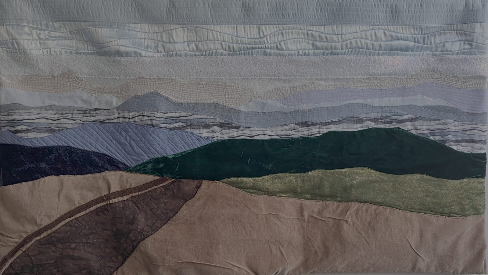
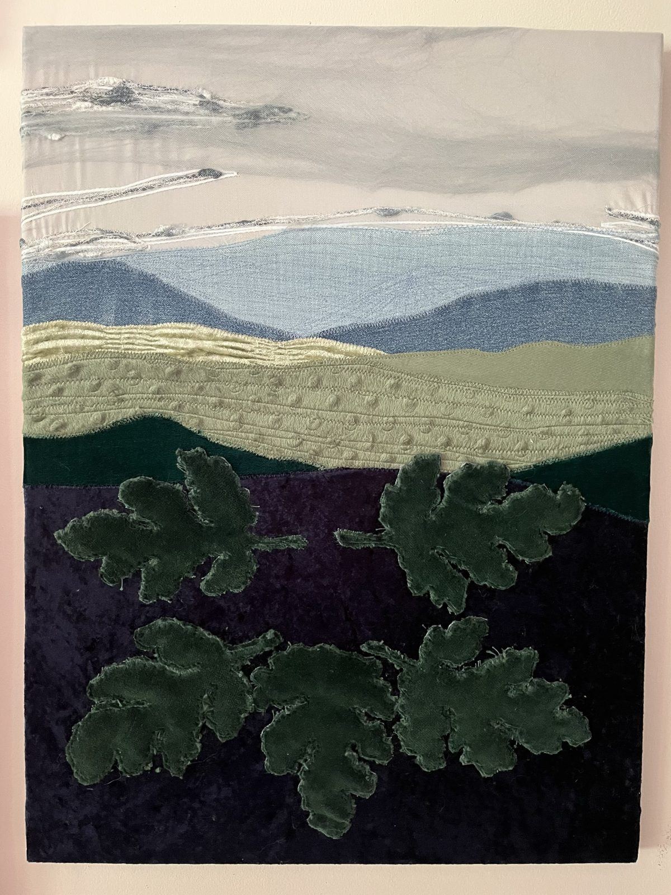
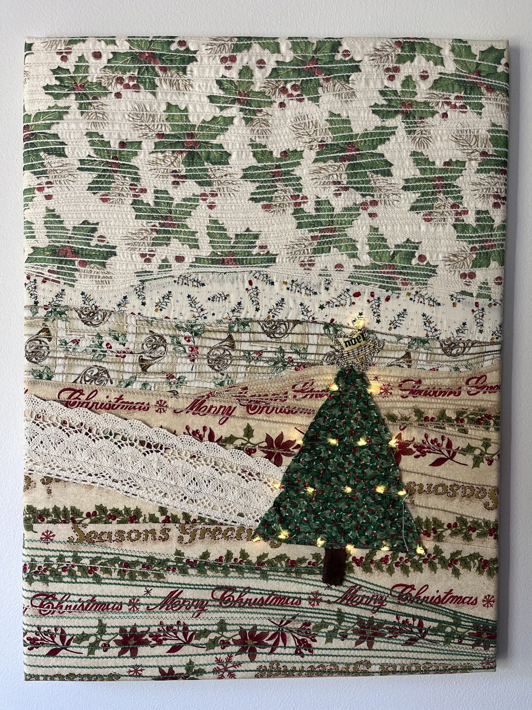
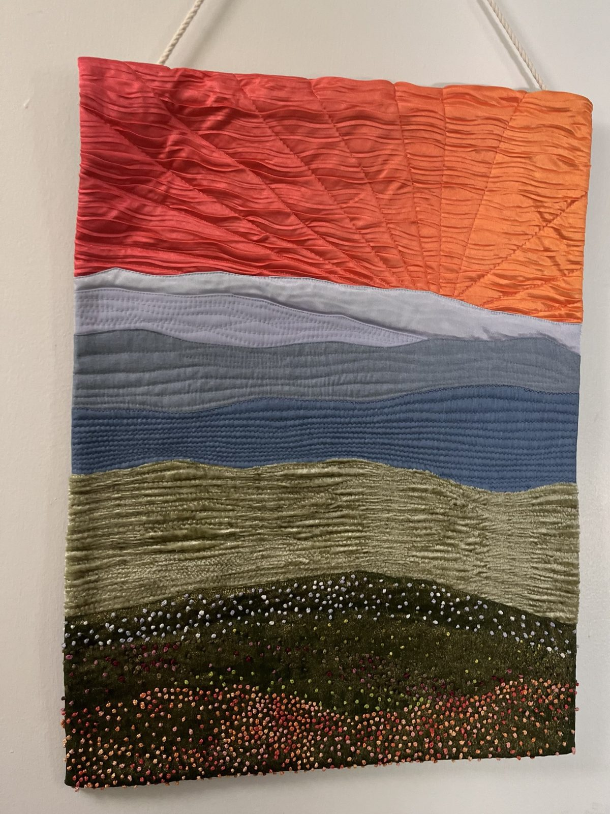
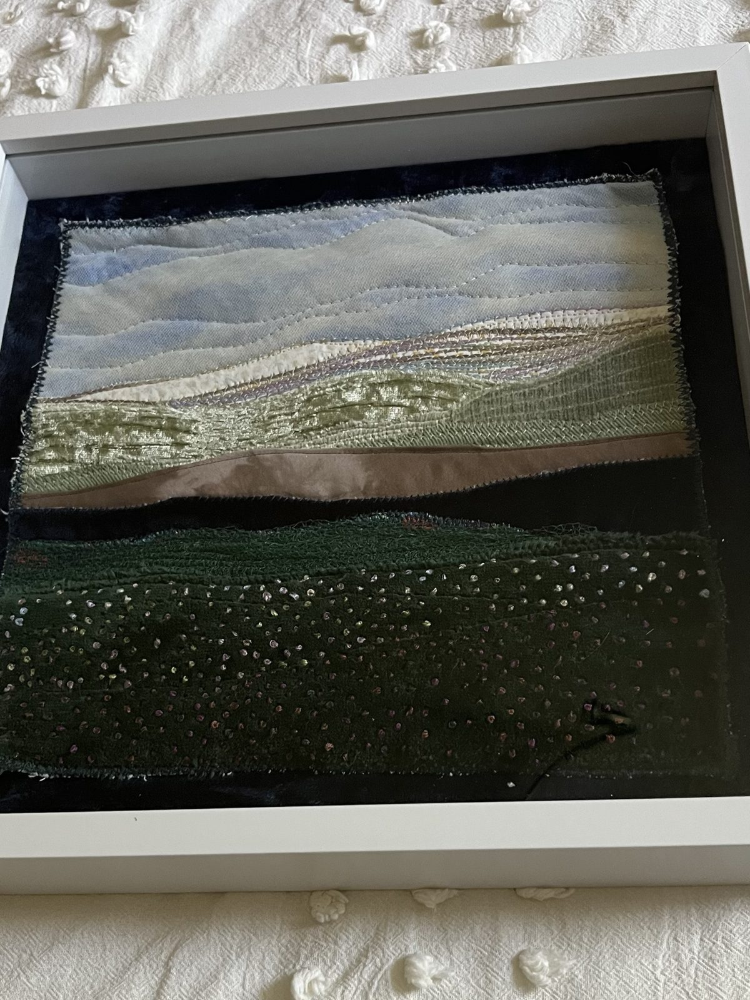
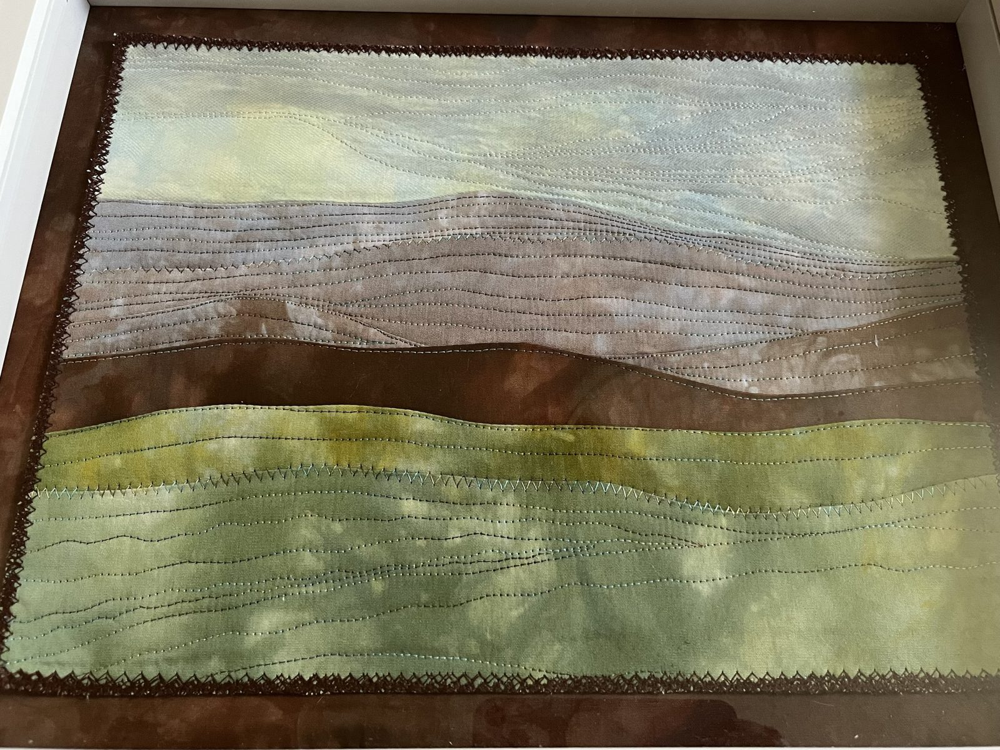
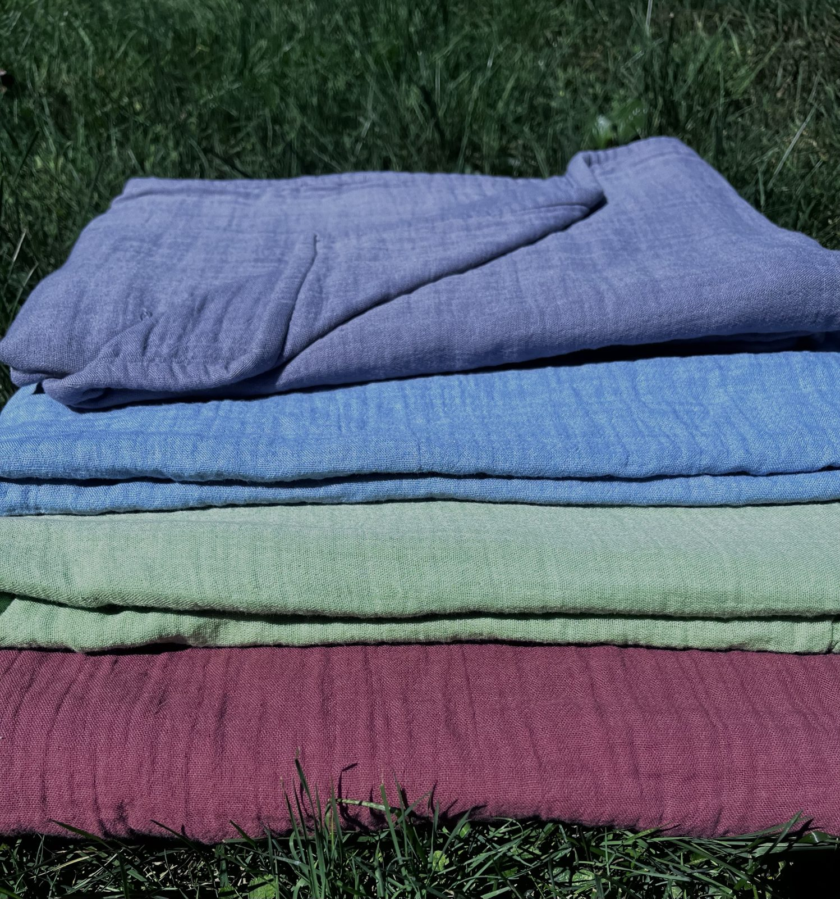
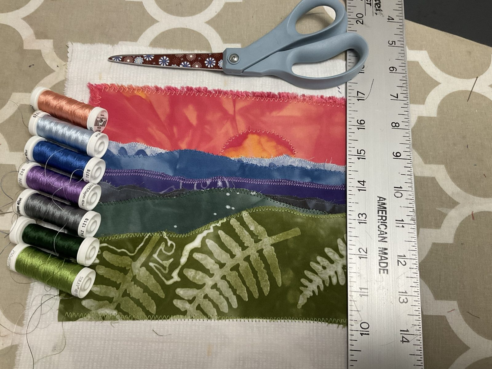

Process
Raw edge or turned edge?
Two ways to make the same landscape, and which one fits how you sew.
Read itThe call is coming from inside the house. So is the art.
Art quilts, hand-dyed cloth, and table linens, made at home in the Blue Ridge by Kristi Coriden.
Soft materials, loud opinions. Made by hand, at home, without asking anyone's permission.
Wall art · one of a kind
Hand-dyed cloth, upcycled denim, and stitching you can see from across the room. These are made for walls, not the linen closet.

Sold
Available[PRICE]

Available[PRICE]

Sold
Sold
SoldAlso in the studio, photos coming: Ace of Cups (tarot series, 18 × 24) and Graybeard (upcycled denim, 33 × 35, $770). Small shadow boxes start at $65.
Where the ridges come from
These Appalachians are some of the oldest mountains on the planet, and I could look at them all day. The farthest ridges blend into the sky, and it's hard to tell how many you're looking at. Up close they turn greener, or redder in the fall. Every landscape I make starts here.
How it's made
Every landscape goes through the same four stages. You can watch most of them on Instagram.


White cotton and linen go into small batches of fiber-reactive dye, so the color lives in the fiber instead of sitting on top. Three trips through the washer per batch.
Each mountain layer is traced onto fusible interfacing, fused to its fabric, and auditioned on the table. I snap a photo before anything gets glued.
Layers go on one at a time, back to front. Straight stitch, then zigzag, then I break the pattern once in the middle so it doesn't look machine-made.
Couched variegated thread for clouds, wool roving under tulle, sequin mesh, French knots on the closest ridges. Then I true the edges and frame it.
A scant ⅛″ edge stitched down flat. Quicker, and it softens and frays with every wash, so the work looks lived-in.
A ¼″ allowance pressed under before stitching. Crisp, classic appliqué that won't fray. Takes patience and a hot iron.
Stitch Library
Couching, wool roving under tulle, French knots and more. What each one is, what you need, and how to do it.
Free pattern
One little landscape, glued, stitched and cut into three 2″ × 6″ bookmarks. No interfacing, beginner friendly, and a great gift. It's free when you join the list.
Found footage
Process reels from Instagram, plus the old sew-along tapes from my first channel, Kristi Sews Cool Stuff.
Watch white cloth turn Blue Ridge blue.
REELRidge by ridge: a landscape in 60 secondsSeven layers, glued, stitched, trimmed.
VHS · 2021Sew-along, part 1: cutting the patternSimplicity 1618, the cold-shoulder top. The pattern unfolds like a marshmallow in a microwave.
VHS · 2021Sew-along, part 2: French seamsNo serger, no problem. Ninety minutes, half of it pinning and pressing.
About the name
It's a line from an old horror movie, flipped. The scary thing was never out there. It was always right here in the house: people at the kitchen table with scissors, scraps and something to say.
Quilting has always been where people talk freely while their hands are busy. The protest and political quilts at QuiltCon made that impossible to miss: stitched slogans, salvaged cloth, nobody asking permission. That's the spirit here. DIY, a little punk, and made to be used.
Etsy shop · ArtHouseArtQuilts
Runners and placemats in the same hand-dyed colors as the wall pieces. Everyday art for the dinner table. They're what people keep picking up at the booth, so they're what's in the shop.
[PRICE]
[PRICE]
Available now
Double gauze in periwinkle, cornflower, sage and plum. Soft from the first wash and softer every wash after. Each one is dyed by hand, so no two match.
$55
Journal
Process
Two ways to make the same landscape, and which one fits how you sew.
Read itMaterials
Store-bought blues never look like the ridges out my window.
Read itFrom the vault · 2012
Before the quilts, I was cutting up thrift-store sweaters and turning men's shirts into toddler dresses. The upcycling posts from my old blog, back from the dead.
Read the old postIn person
Quilts look better in person. Here's where they'll be.
Downtown Waynesville, NC. I'm at my own booth all day. Join the list and get the free bookmark pattern.
Harrah's Cherokee Center, Asheville. Wall pieces and kits at the Local Cloth booth, 10am–5pm.
Runners and placemats, plus whatever survives the fairs. ArtHouseArtQuilts
The newsletter
An email every month or so, only when there's something worth saying: new work, where to find me, and what's on the cutting table.